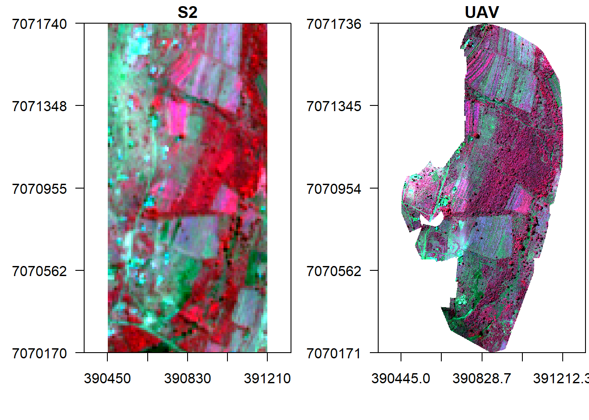
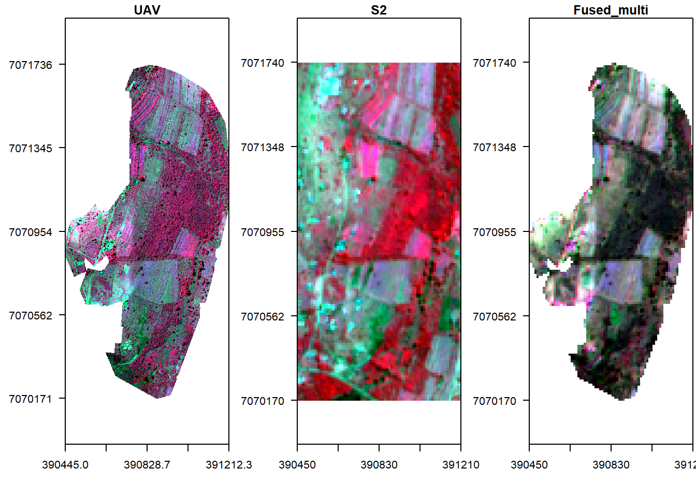
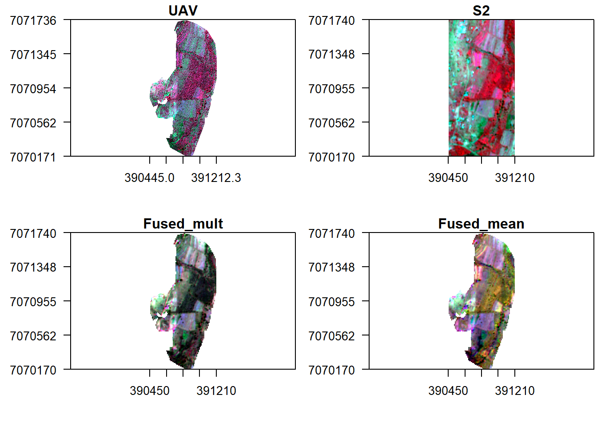
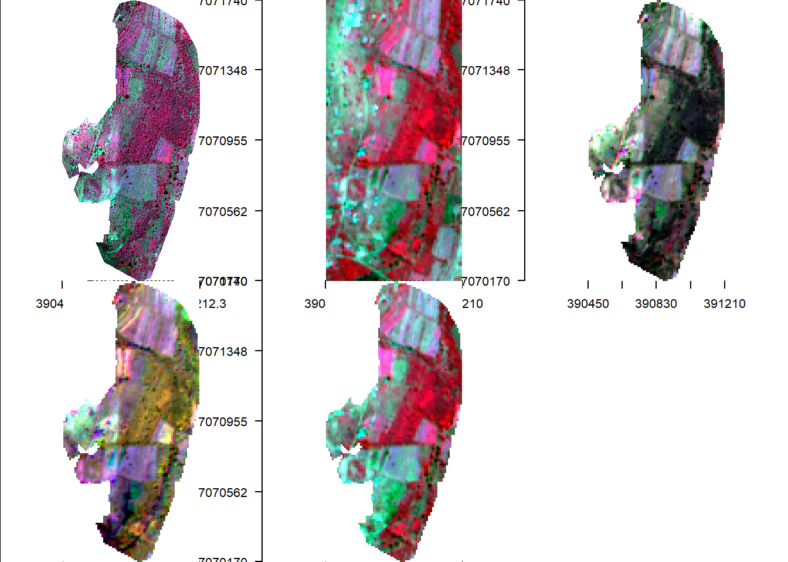

This tutorial seeks to illustrate how image fusion can be conducted. We use an Unmanned Aerial Vehicle (UAV) and Sentinel 2 optical image acquired within the same area and period. Data fusion: a formal framework in which are expressed means and tools for the alliance of data originating from different sources. It aims at obtaining information of greater quality; the exact definition of ”greater quality” will depend upon the application (Ranchin and Wald, 2010).
The principal motivation for image fusion is to improve the quality of the information contained in the output image in a process known as synergy. A study of existing image fusion techniques and applications shows that image fusion can provide us with an output image with an improved quality. In this case, the benefits of image fusion include:
Load libraries, declare variables and data paths.
rm(list=ls(all=TRUE)) #Clears R memory
unlink(".RData")
if (!require("pacman")) install.packages("pacman"); library(pacman) #package manager( loads required packages/libraries in list as below if not installed they will be installed
p_load(raster, terra)
options(warn=1)
cat("Set variables and start processing\n")## Set variables and start processingRoot <- 'D:/JKUAT/RESEARCH_Projects/Eswatini/Data/'
Path_out <- paste0(Root,"Output/")Let us load UAV and Sentinel 2 optical images that we will use.
path <- list.files(paste0(Root,'S2/interim/'),pattern = (".tif$"), recursive = TRUE, full.names = TRUE)
path## [1] "D:/JKUAT/RESEARCH_Projects/Eswatini/Data/S2/interim/RT_T36JUR_20210418T073611_B02.tif"
## [2] "D:/JKUAT/RESEARCH_Projects/Eswatini/Data/S2/interim/RT_T36JUR_20210418T073611_B03.tif"
## [3] "D:/JKUAT/RESEARCH_Projects/Eswatini/Data/S2/interim/RT_T36JUR_20210418T073611_B04.tif"
## [4] "D:/JKUAT/RESEARCH_Projects/Eswatini/Data/S2/interim/RT_T36JUR_20210418T073611_B08.tif"s <- rast(path)
s## class : SpatRaster
## dimensions : 10980, 10980, 4 (nrow, ncol, nlyr)
## resolution : 10, 10 (x, y)
## extent : 3e+05, 409800, 6990220, 7100020 (xmin, xmax, ymin, ymax)
## coord. ref. : +proj=utm +zone=36 +south +datum=WGS84 +units=m +no_defs
## sources : RT_T36JUR_20210418T073611_B02.tif
## RT_T36JUR_20210418T073611_B03.tif
## RT_T36JUR_20210418T073611_B04.tif
## ... and 1 more source(s)
## names : RT_T36J~611_B02, RT_T36J~611_B03, RT_T36J~611_B04, RT_T36J~611_B08path <- list.files(paste0(Root,'WingtraOne/'),pattern = (".tif$"), recursive = TRUE, full.names = TRUE)
path## [1] "D:/JKUAT/RESEARCH_Projects/Eswatini/Data/WingtraOne/mpolonjeni_05042021m3f1_transparent_reflectance_blue.tif"
## [2] "D:/JKUAT/RESEARCH_Projects/Eswatini/Data/WingtraOne/mpolonjeni_05042021m3f1_transparent_reflectance_green.tif"
## [3] "D:/JKUAT/RESEARCH_Projects/Eswatini/Data/WingtraOne/mpolonjeni_05042021m3f1_transparent_reflectance_nir.tif"
## [4] "D:/JKUAT/RESEARCH_Projects/Eswatini/Data/WingtraOne/mpolonjeni_05042021m3f1_transparent_reflectance_red.tif"v <- rast(path)
v## class : SpatRaster
## dimensions : 12981, 6363, 4 (nrow, ncol, nlyr)
## resolution : 0.12059, 0.12059 (x, y)
## extent : 390445, 391212.3, 7070171, 7071736 (xmin, xmax, ymin, ymax)
## coord. ref. : +proj=utm +zone=36 +south +datum=WGS84 +units=m +no_defs
## sources : mpolonjeni_05042021m3f1_transparent_reflectance_blue.tif
## mpolonjeni_05042021m3f1_transparent_reflectance_green.tif
## mpolonjeni_05042021m3f1_transparent_reflectance_nir.tif
## ... and 1 more source(s)
## names : mpolonj~ce_blue, mpolonj~e_green, mpolonj~nce_nir, mpolonj~nce_redNow check image properties and assign meaningful names to its bands.
#Resolution
res(s)## [1] 10 10#Extents
ext(s)## SpatExtent : 3e+05, 409800, 6990220, 7100020 (xmin, xmax, ymin, ymax)#image dimensions
dim(s)## [1] 10980 10980 4#Number of bands
nlyr(s)## [1] 4names(s) <- c("b", "g","r", "nir")
s## class : SpatRaster
## dimensions : 10980, 10980, 4 (nrow, ncol, nlyr)
## resolution : 10, 10 (x, y)
## extent : 3e+05, 409800, 6990220, 7100020 (xmin, xmax, ymin, ymax)
## coord. ref. : +proj=utm +zone=36 +south +datum=WGS84 +units=m +no_defs
## sources : RT_T36JUR_20210418T073611_B02.tif
## RT_T36JUR_20210418T073611_B03.tif
## RT_T36JUR_20210418T073611_B04.tif
## ... and 1 more source(s)
## names : b, g, r, nirres(v)## [1] 0.12059 0.12059ext(v)## SpatExtent : 390445.0352, 391212.34937, 7070171.12052, 7071736.49931 (xmin, xmax, ymin, ymax)dim(v)## [1] 12981 6363 4names(v) <- c("b", "g","nir", "r")
v## class : SpatRaster
## dimensions : 12981, 6363, 4 (nrow, ncol, nlyr)
## resolution : 0.12059, 0.12059 (x, y)
## extent : 390445, 391212.3, 7070171, 7071736 (xmin, xmax, ymin, ymax)
## coord. ref. : +proj=utm +zone=36 +south +datum=WGS84 +units=m +no_defs
## sources : mpolonjeni_05042021m3f1_transparent_reflectance_blue.tif
## mpolonjeni_05042021m3f1_transparent_reflectance_green.tif
## mpolonjeni_05042021m3f1_transparent_reflectance_nir.tif
## ... and 1 more source(s)
## names : b, g, nir, rCrop Sentinel 2 image to UAV image extents.
s <- crop(s, ext(v), snap="near")Display the images side by side.
x11()
par(mfrow = c(1, 2), mar = c(4, 5, 1.4, 0.2)) #c(bottom, left, top, right)
plotRGB(s, r="nir", g="r", b="g", stretch="lin", axes = TRUE, main="S2")
plotRGB(v, r="nir", g="r", b="g", stretch="lin", axes = TRUE, main="UAV")
First let us conduct a spectral fusion of S2 and UAV images. To do this we have to resample UAV image to S2 extents.
v_r <- resample(v, s, method='bilinear')Fuse the two images by multiplication and display it against the original ones.
#Fuse by multiplication
f1 <- s * v_r
f1## class : SpatRaster
## dimensions : 157, 76, 4 (nrow, ncol, nlyr)
## resolution : 10, 10 (x, y)
## extent : 390450, 391210, 7070170, 7071740 (xmin, xmax, ymin, ymax)
## coord. ref. : +proj=utm +zone=36 +south +datum=WGS84 +units=m +no_defs
## source : memory
## names : b, g, r, nir
## min values : 0.0002068561, 0.0005442272, 0.0026425113, 0.0019369536
## max values : 0.01279990, 0.01698387, 0.05305753, 0.04016119#Display fused image alongside original UAV
x11()
par(mfrow = c(1, 3),mar = c(4, 5, 1.4, 0.2))
plotRGB(v, r="nir", g="r", b="g", stretch="lin", axes = TRUE, main="UAV", cex.axis=0.7)
plotRGB(s, r="nir", g="r", b="g", stretch="lin", axes = TRUE, main="S2", cex.axis=0.7)
plotRGB(f1, r="nir", g="r", b="g", stretch="lin", axes = TRUE, main="Fused_multi", cex.axis=0.7)
What about mean fusion?
#Fuse by multiplication
f2 <- mean(s, v_r)
f2## class : SpatRaster
## dimensions : 157, 76, 4 (nrow, ncol, nlyr)
## resolution : 10, 10 (x, y)
## extent : 390450, 391210, 7070170, 7071740 (xmin, xmax, ymin, ymax)
## coord. ref. : +proj=utm +zone=36 +south +datum=WGS84 +units=m +no_defs
## source : memory
## names : b, g, r, nir
## min values : 0.01532078, 0.02351120, 0.05345298, 0.06345835
## max values : 0.1225800, 0.1548688, 0.3631510, 0.2155108#Display fused image alongside original UAV
x11()
par(mfrow = c(2, 2), mar = c(4, 5, 1.4, 0.2))
plotRGB(v, r="nir", g="r", b="g", stretch="lin", main="UAV", axes=TRUE, cex.axis=0.7)
plotRGB(s, r="nir", g="r", b="g", stretch="lin", main="S2", axes=TRUE, cex.axis=0.7)
plotRGB(f1, r="nir", g="r", b="g", stretch="lin", main="Fused_mult", axes=TRUE, cex.axis=0.7)
plotRGB(f2, r="nir", g="r", b="g", stretch="lin", main="Fused_mean", axes=TRUE, cex.axis=0.7)
Let us finally follow the fusion approach in Zou et al (2018).
f3 = (s/v_r)*v_r
x11()
par(mfrow = c(2, 3), mar = c(4, 5, 1.4, 0.2))
plotRGB(v, r="nir", g="r", b="g", stretch="lin", main="UAV", axes=TRUE)
plotRGB(s, r="nir", g="r", b="g", stretch="lin", main="S2", axes=TRUE)
plotRGB(f1, r="nir", g="r", b="g", stretch="lin", main="Fused_mult", axes=TRUE)
plotRGB(f2, r="nir", g="r", b="g", stretch="lin", main="Fused_mean", axes=TRUE)
plotRGB(f3, r="nir", g="r", b="g", stretch="lin", main="Zhou etal", axes=TRUE)
Thierry Ranchin and Lucien Wald. Data Fusion in Remote Sensing of Urban and Suburban Areas, pages 193–218. Springer Netherlands, Dordrecht, 2010. ISBN 978-1-4020-4385- 7. doi: 10:1007/978-1-4020-4385-7 11. URL http://dx:doi:org/10:1007/978-1- 4020-4385-7 11.
Y. Zou, G. Li and S. Wang, “The Fusion of Satellite and Unmanned Aerial Vehicle (UAV) Imagery for Improving Classification Performance,” IEEE International Conference on Information and Automation (ICIA), 2018, pp. 836-841, doi: 10.1109/ICInfA.2018.8812312.